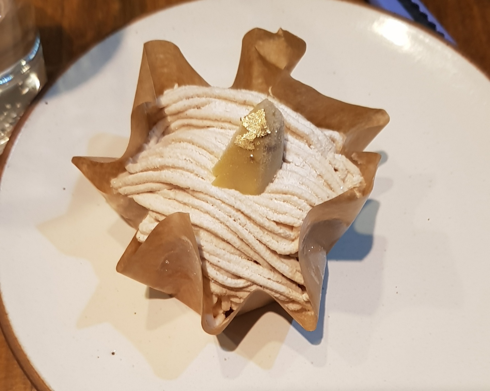
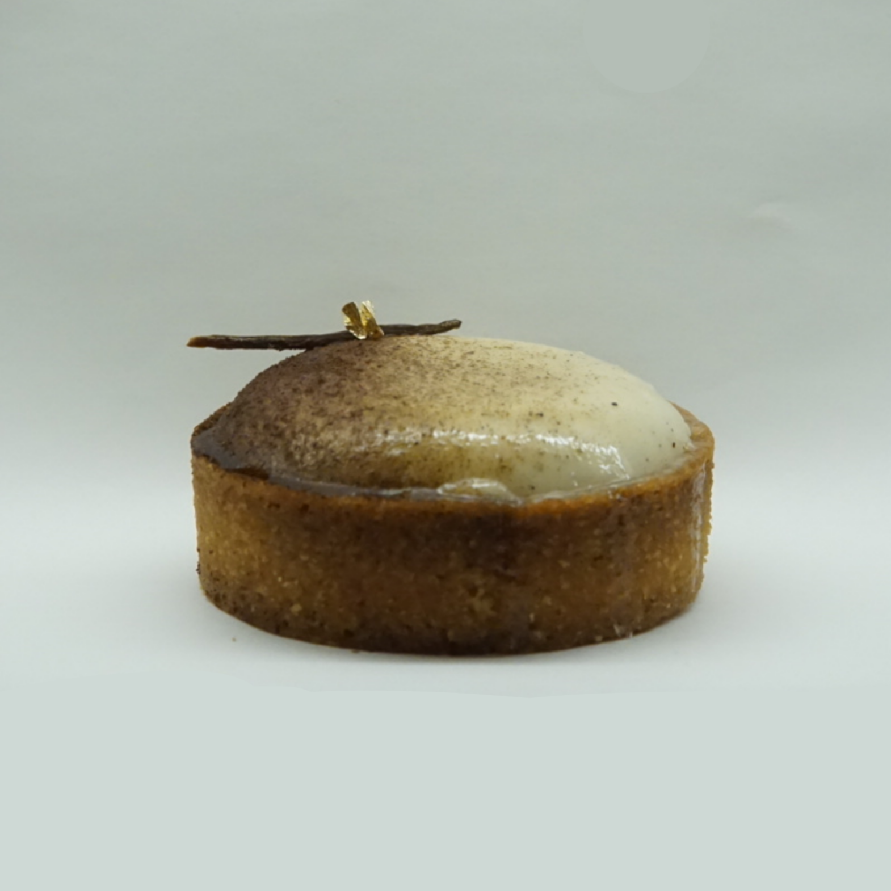
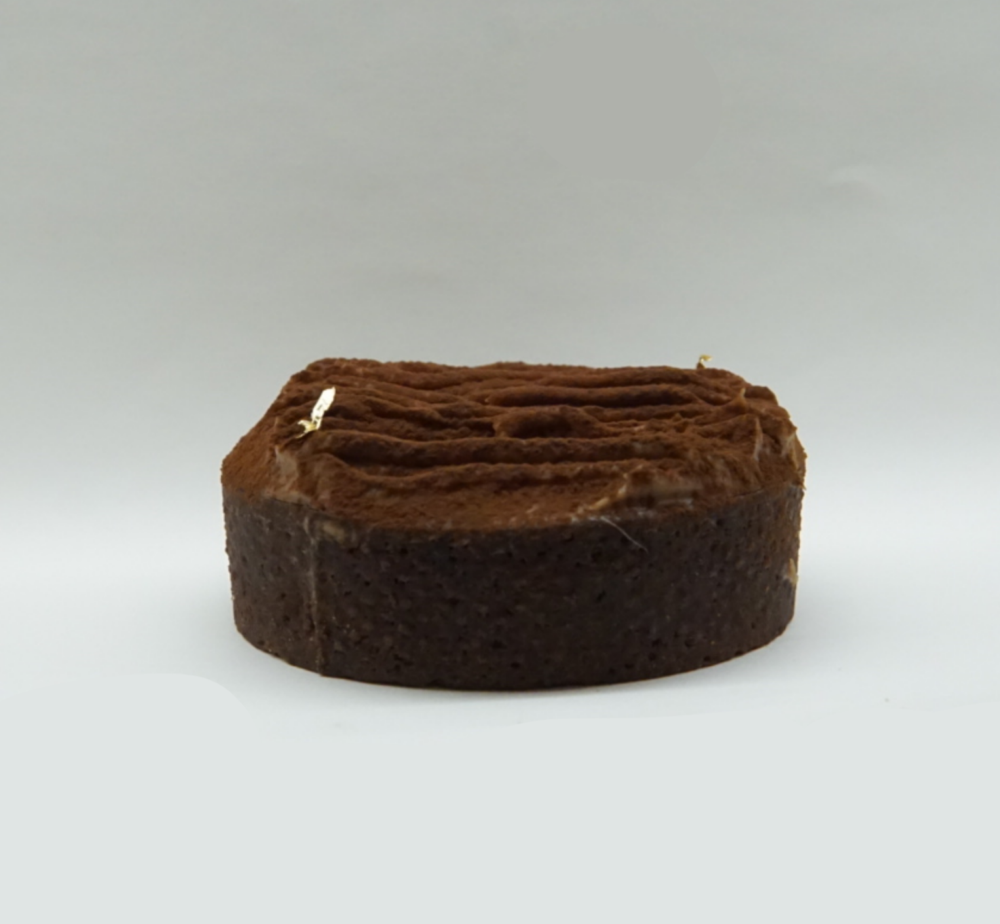
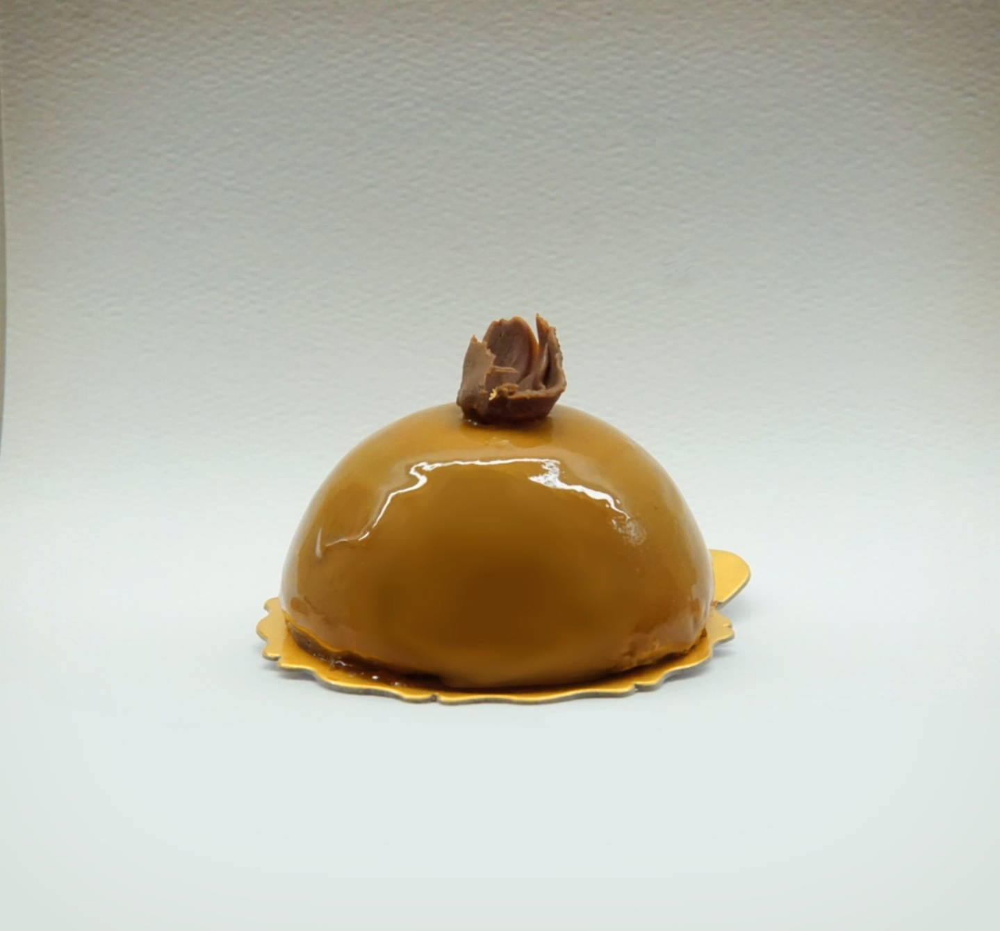

몽블랑
실키한 식감의 제누와즈, 공주밤과 바닐라빈을 넣어 고소하고 달콤한 부드러운 밤케이크
바닐라타르트
바닐라빈을 넣어 달콤한 향과 부드러운 바닐라크림과 가나슈, 바닐라통카 아몬드크림과 바삭한 타르트지가 풍부한 조화를 이루는 타르트
초코타르트
바삭한 초콜릿 타르지와 통카빈 향이 나는 부드러운 초콜릿 수플레, 연한 질감에 약간의 산미가 있는 진한 맛의 다크초콜릿 가나슈, 쫀쫀한 텍스쳐의 아이스크림같은 밀크초콜릿 크림의 타르트
피스타치오 파리브레스트
 부드러운 슈에 진한 맛과 향의 피스타치오 무슬린크림과 피스타치오 프랄리네를 얹은 파리브레스트
부드러운 슈에 진한 맛과 향의 피스타치오 무슬린크림과 피스타치오 프랄리네를 얹은 파리브레스트
캐러멜얼그레이케이크
진한 풍미의 캐러멜 크림, 캐러멜 글레이즈와 얼그레이 크림, 얼그레이 수플레 케이크가 은은한 향을 남기는 쫀쫀한 식감의 케이크